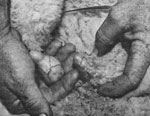

Living Through Lambing Part Ii: Birthing Basics
January/February 1982
Here are more tips to help you survive the most critical time of the shepherd's year.
by Elora McKenzie
In Part I of "Living Through Lambing" (which appeared in MOTHER NO. 72, p age 34), I discussed both the long- and short-term preparations that sheep farmers need to make before the lambing season gets underway. It's only when those all-important weeks arrive, though, that the real work of a shepherd's year starts.
As a ewe's delivery day nears, we begin to watch for the unmistakable signs that'll tell us the animal is approaching her due date. Most ewes "bag up" or "make a sac"-that is, sport enlarged udders-and will often "spring" (show a slightly swollen, pinkish vulva) several days before lambing. (A protruding, reddish genital area, however, can be a symptom of a serious problem . . . usually a prolapsed vagina. See the accompanying sidebar for information on treating that malady.)
Since it's not always possible to predict a birth by an animal's size and shape, you'll need to look for other tell-tale signs showing that a sheep is indeed "near her time". At this point some shepherds like to confine the ewe in a warm, dry lambing pen. Our system, however, is to make frequent lamb checks around the barn or pasture . . . searching for newborns with our ears as well as our eyes, because a new mother will murmur distinctive sheep-love sounds to her offspring. And it's always a good idea to listen carefully before barging into a potential birthing area (especially at night, when an unexpected flashlight beam might scatter a family before you have a chance to tag the new arrivals).
LABOR AND DELIVERY
Many novice shepherds have asked us how long a ewe will normally be actively in labor. Some experts say that delivery ought to occur within half an hour after the onset of contractions . . . while others insist that two hours isn't excessive. Our experience runs the gamut between those extremes: We've found that the time will vary, depending upon such factors as the animal's weight and age, the size of her baby, and her strength. Your best bet is to rely on firsthand observation-rather than a particular timetable-to determine whether a ewe is in trouble or just having a long, but not dangerous, labor.
A normal presentation, in the birth of a lamb, will begin with the appearance of the front legs, followed by the nose . . . and then-once the shoulders pass through the birth canal-the rest of the delivery will proceed quickly and easily. Of course, lambs can emerge from their mothers' wombs in a variety of positions, many of which may require the attention of an experienced shepherd . . . or even-in some cases-a veterinarian. For a handy review of abnormal births, we consult our copy of an article printed several years ago in The Shepherd magazine. "Obstetrics in the Sheep Barn", which tells how to deal with ten difficult delivery situations, can be ordered-for $2.00 per reprint-from The Shepherd, Dept. TMEN, Sheffield, Massachusetts 01257.
Once the fuzzy babe has arrived, a good ewe will clean the veil of mucus covering the newborn's mouth (to enable it to take its first breath) and lick it dry. However, some mothers-particularly if they're young, inexperienced, or just plain exhausted-may be slow to perform those instinctive duties, so we occasionally have to lend a helping hand. If all goes well, though, we like to give the ewe and her infant an undisturbed half-hour immediately following the birth . . . so they can get acquainted and form a family bond. After this postpartum reverie, we swing into the normal lambing routine that's really the heart of our whole system.
A TIGHT SCHEDULE
It's often difficult to remember-while overwhelmed with the euphoria of the first birth of the season-how tired, irritable, and slightly befuddled we'll become after a month or two of the intense activity. So we've learned that the most effective lamb- and temper-saver is a standard procedure that can be performed by rote. Such a system should be worked out well in advance, so that it can carry the burden of performance when that inevitable battle fatigue sets in on weary shepherds.
Here's the schedule we follow when handling a normal birth, beginning soon after the lamb is dropped.
[1] Swab the umbilical cord with iodine.
[2] Tag the lamb and write down its number, sex, and mother's number in the field record.
[3] Bag the lamb . . . that is, put on its LamDry raincoat. (We do this even in pleasant weather, since we know that the skies can turn threatening in a matter of minutes.)
[4] If the lamb is an only child, verify the ewe's milk flow and leave mother and child alone in the field (or wherever the birth occurred).
[5] If a ewe delivers twins, move the family into a separate pen and then check the sheep's milk flow.
Finding out whether the animal's milk has started can be tricky-especially if you're dealing with flighty pasture ewes-but the job has to be done, since some lambs will be too weak to dislodge the waxy plug that may initially seal the orifice of the teat . . . and failure to clear such a block can result in not only a swollen, mastitis-afflicted udder, but possibly a starved lamb as well.
The best method I've found to snag a suspicious mother is to fool her into believing you're kidnapping her baby. I kneel and hold the lamb where the ewe can see it, letting her approach the bait and being careful not to look directly at her. When she comes close enough, I grab her front foot before she has a chance to retreat. I hang on tight while getting my footing (and releasing the lamb), then I grasp the ewe under the chin and stand up. That puts her into as almost helpless position with her head pointing skyward. Once she quiets down, I open her teats with a gentle, downward squeeze-strip motion. (If a ewe is particularly skittish, you can always restrain her with a halter secured to a fence.)
FORGING FAMILIES
Newly arrived baby sheep need not only nourishment, but also a great deal of maternal affection. Believe it or not, a lamb-which isn't as resilient or aggressive as a piglet or a calf-can die as a result of feeling rejected! The problem is sometimes especially delicate when multiple births occur. If a ewe has twins, the best way to assure that Mom will accept the young'uns equally is to isolate the new family by means of a temporary, portable pen called a "hurdle".
To lure the sheep into that enclosure, I again use the newborns as live bait: Holding a lamb under each arm, I walk backwards toward the pen so that the ewe can see her babies disappearing. Often the lambs will help by crying pitifully to attract Mama's attention . . . but, if they don't, I've learned to produce a fairly believable "meeeah" myself (an F-sharp seems to work well). As long as the ewe can see her lambs, she'll usually follow me straight into the hurdle and then contentedly nuzzle the babes while I lock the gate safely behind the group.
The amount of time the young family remains penned together will depend upon what happens next. If after half a day, for instance, I see that the group is closely knit . . . that the twins are nursing well . . . and that their mother obviously intends to care for them both, I turn them out into an uncrowded location. On the other hand, if the ewe seems to be favoring one of her lambs, I move that sibling to a separate pen for several hours of enforced vacation, to give the other newborn a chance at the chow line. It may sometimes be necessary to assist the rejected lamb by actually putting the nipple into its mouth, but tube-feeding the little critter shouldn't be necessary unless the mother completely refuses to cooperate.
When I'm sure that the formerly neglected lamb is being nursed and loved, I return its twin to the hurdle . . . confident that, after yet another short period of undisturbed confinement, the ewe will ac cept them both. Finally, once the babes have been with their mother for three or four hours, we use the finger-in-mouth test on the sleeping lambs to check their status: If a newborn has been nursing, its mouth will be warm . . . while sick or rejected animals-those that'll need to be tube-fed-usually have cold or just lukewarm mouths.
Anytime the test reveals an unloved lamb, we milk the ewe directly into a 60-cc syringe, fit the syringe with a 14" to 16" small-bore catheter, and tube-feed the lamb with its own mother's milk . . . following the procedure detailed in Part I of this article, and being careful not to send the liquid down the babe's windpipe. When obtaining the life-giving fluid, I again rely on a halter . . . which is an invaluable tool in such situations. I simply secure the ewe's nose, fasten the line's free end to the hurdle, butt the sheep's hip into the fence with my head, and go to work!
EMERGENCY CARE
Even though we make frequent lamb checks, we sometimes arrive at a delivery site too late to prevent what I call a "flat lamb" . . . one of those little ones that's laid out on its side, looking all too ready to pack it in. The pitiable crea tures are suffering from either lack of food and love or-in more serious cases-"white muscle disease", which is a deficiency of vitamin E and selenium . . . but we can often save them. Should a newborn have the latter malady, an injection of those two nutrients, as recommended in Part I, will revive the animal. (If, as some breeders do, you've given the ewe herself such an injection a few weeks prior to lambing, white muscle disease is not likely in her offspring.)
A flat lamb that simply needs basic nourishment and affection is usually so cold that its bodily functions will have slowed to a snail's pace. I hustle it up to the house and run a sinkful of water . . . not hot, but warm enough to bring feeling into cold hands. Before immersing the lamb, I tube-feed it with warm colostrum. Once the tiny animal is submerged to its neck in warm water, I gently flex its legs-moving them as if it were running-to stimulate the circulation. As strange as it may seem, it also helps to "baaa" at the lamb while you're working with it. This deception seems to go a long way toward reviving the sickly critter's spirit . . . and a lamb will sometimes even weakly answer my call, thinking-I suppose-that Mom really does care, after all.
As soon as the youngster seems fairly well thawed, I take it out of the bath . . . drip it dry for a moment . . . rub it vigorously with an absorbent rag or towel . . . and then cuddle it near the woodstove or fire for a while. After an hour or two the revitalized creature will usually be stronger and ready to be reunited with its mother.
Whenever the weather is foul (during rain, ice, and snow storms . . . or simply in bitter cold temperatures), we don't wait for lambs to go flat before pitching in. Experience has taught us that hostile conditions often cause a just-born sheep to draw up and huddle to keep warm . . . and chances are that-in such cases-it won't bother to nurse at all. We make it a habit to tube every "bad weather" lamb that's born-without waiting to find out whether it will get up to nurse-right after we tag and bag it. We've found that an initial forced feeding will usually give the animal enough energy to stay warm and seek out its mother.
ORPHANS
Sometimes, in spite of all our encouragement, a ewe will refuse to accept her lamb . . . perhaps because she favors another baby, because she has udder problems, or because a flat lamb has been revived too late to fit into her closely defined circle of affection. Some people call the rejects pet lambs, but other shepherds-including us-refer to them as bummers. Sure, they're cute when they follow you everywhere, but the toddlers are also real nuisances to any busy farmer!
When we began sheep raising, we used to keep all the rejects in our flock . . . but after a season or two, we realized that the special feeding schedule required by the orphans was simply too time-consuming and expensive. You must begin by giving such an animal 60 cc of milk four to five times a day, and gradually increase to 120-cc helpings by the end of the first week. Or the orphan can simply be fed every three hours during the first week of life and then every six hours thereafter . . . until it's about a month old and able to survive on three daily feedings. After its initial two meals of colostrum, an abandoned baby can dine on lamb replacer and "creep feed" . . . which is nourishment that's placed in a trough accessible only to the small animals. It's possible to coax the youngsters to accept creep feed by sprinkling lamb replacer over the rations and forcing a little bit into their mouths.
Some shepherds-in an effort to save time and trouble-like to train their orphan lambs to eat from automatic nursing setups, but we haven't found such devices as helpful as they first seemed. Training the tiny, starving animals is no easy task . . . and the milk containers require a lot of attention, since they must be kept clean and free of bacteria and be filled at set intervals.
Our present strategy is to keep orphans only as long as needed to replace stillborn lambs. (We tube-feed rather than bottle-feed them until they're adopted, because a dependency on the artifi cial nipple shape may make the animal reluctant to accept a foster mother's natural teat.) If we find they're not needed for that purpose, we sell the motherless babes, at whatever price we can get, to folks looking for pets.
ADOPTION BY GRAFTING
Before putting an abandoned lamb on the market, however, we always attempt to have the orphan adopted by a ewe that has lost her own offspring. Shepherds commonly use one of several "grafting" methods to encourage a bereaved mother to accept a substitute. The only foolproof technique we know of is called hide-grafting, which incorporates another procedure known as slime-grafting. The combined practice entails confining the ewe in a hurdle, then skinning her dead lamb (the sooner after its death the better) . . . and dressing an orphan in that jacketlike covering so the mother will assume it to be her own.
To remove the dead lamb's skin, I use a sharp knife to make a linear slit up the belly . . . then a ring slit around each leg above the knee joint, and another around the neck to meet the belly cut. Next, with one hand I pull the skin to one side of the center opening and run my other hand along the length of the body between the skin and the carcass to free the membranes. I follow the same procedure on the other side of the carcass, sometimes using a knife to cut through membranous layers. Then I work the blade-or one finger-down through and around each leg hole and, finally, cut through the tailbone at its base, leaving the tail attached to the skin (and being careful to retain any fetal dung, since that's the first place a ewe checks for the scent of her own newborn).
I fit this rather grisly coat over the back of the prospective adoptee . . . rubbing its head with the hide as I do so, in order to grind the smell in. I take some of the placenta from the dead lamb's birth-if I can find it-and rub that, too, all over the orphan. (This last step is slime-grafting, which some shepherds use alone . . . preferring it to the messy, unpleasant task of skinning a dead lamb.)
In order to complete the ruse, we often have to tie two of the orphan's legs together-especially if it's already a frisky two- or three-day-old-so that it will struggle to get up and convince the ewe that it is indeed a newborn babe. (After all, if I allowed a foster lamb to make a beeline for the teat as soon as I placed it with the tentative mother, she'd know full well she hadn't just hatched such a lusty child!) I generally remove the legbinding after about 30 minutes, and watch the relationship bloom from there. Of course, we always keep a record of the adoption, including the reason for the natural lamb's demise. If there's no acceptable justification for it, we usually cull the ewe at the end of the season. If you prefer, you can have a vet perform an autopsy on the dead newborn. (In some states this service is available free of charge.)
When a lamb dies and no graft is available, we have to dry up the ewe, especially if she's a heavy milker. To do so, we milk her out once . . . keep her penned with low-quality hay and no water for 36 hours . . . then milk her out again and give her along, satisfying drink. One more round of this procedure should get the drying-up process off to a good enough start to make her udder flaccid and prevent the formation of hard spots-or mastitis-in the bag. And to be sure the ewe dries up completely, we keep her off lush pasture until we see her bag diminish.
DOCKING AND CASTRATION
Once a shepherd has safely delivered the season's crop of lambs and knows that they're all well cared for, he or she may be tempted to heave a sigh of relief and head for the house. Unfortunately, two of the more unpleasant tasks associated with sheep raising are yet to be done. Docking and castration may seem pretty diabolical, but there's sound reasoning behind these practices.
Docking is the process of cutting tails on three-day-old lambs so that the mature sheep will be free of a long, woolly appendage that would collect manure and attract flies. Tailed sheep are prone to flystrike, a hideous infestation in which fly eggs are laid in the dirty wool and later hatch to release maggots, which feed on the living flesh of the unfortunate animal. Docking also makes shearing easier, and some folks claim that tailless ewes breed more readily.
As I mentioned in Part I, we've come to prefer-after plenty of experimentation with various methods-docking by burdizzo and knife. The lamb is held across the shepherd's knee, rear end forward. Then the skin of the tail is moved up toward the lamb's body while the burdizzo is clamped in place . . . positioned to leave enough of a stump so the animal can later swish away flies. A sharp knifecleaned with a mild antiseptic solution such as Zephiran-is used to cut the tail off inside the instrument's jaws. The burdizzo is then left in place for a full minute, and when it's removed, the skin that was pushed forward will spring back to help seal the wound.
There are two good reasons to castrate young rams. First, the males mature so quickly that-if left untouched-they can sometimes breed before they're even weaned . . . a most untimely and undesirable event! Just as significant is the animal's carcass development. The masculine ram frame favors the growth of less expensive cuts of meat (those in the shoulder and neck areas) ... whereas the wether, or castrated ram, develops more valuable meaty hindquarters and loins. We believe that castration by knife alone is the most humane method available (the accompanying photos illustrate this technique).
In summary, lambing season is an extremely busy time of year, even for the owner of a small flock . . . so it pays to be prepared for whatever problems may arise. Fortunately, emergencies are the exception rather than the rule. Most ewes have no difficulty with delivery, claim all their offspring, and generally give their masters little-if any-grief.
FIRST AID FOR PROBLEM EWES
One of the unhappiest sights a shepherd can see-as he or she surveys a flock of nicely fattening mothers-to-be-is a red, bulbous protrusion decorating the rear of his prettiest ewe. The animal will appear to be hunched over, straining to relieve her condition. But, although vaginal prolapse looks alarming, it can usually be treated on the spot . . . often without the help of a veterinarian.
Many circumstances can cause this condition, but here's what usually happens: Toward the end of pregnancy, the increased level of estrogen in the mother sheep's blood (in preparation for lambing) and-in some cases-an inherent muscle weakness cause the birth canal and all its supporting musculature to relax. Well, some ewes just "let down" a little too much, and the whole shebang falls out! The best approach is to deal with the situation immediately after discovery, and proceed as follows:
[1] Keep on hand a supply of "Ewe Bearing Retainers", which will allow you to replace the prolapse. These flat plastic tongues with handles on either side are available from sheep supply houses. [EDITOR'S NOTE: See Part 1, in the previous issue of this magazine, for the addresses of such companies. Turn to page 120 for back issue ordering information.)
[2] Secure the ewe, using a halter, in a clean, dry area . . . just in case she should take a notion to lie down during the restoration process. You might also find it helpful to elevate her hindquarters by propping a bale of hay under her.
[3] Wash the protruding muscles and the retainer thoroughly with Zephiran or another antiseptic.
[4] If the prolapse is minor, you can insert the retainer directly . . . holding the prolapse in position and placing the holder above your hand, so the paddle pushes up against the cervix. (Every package of retainers contains illustrated instructions.) The handles of the device are then tied firmly to clumps of wool on both flanks of the sheep. The ewe will be able to lamb normally past the retainer.
[5] If the prolapse is too large to be manipulated into the animal's body, you may have to shrink it -a bit. Oldtimers swear by a method that we, too, have found to be quite effective. Coat the prolapse with sugar, and then wait for it to draw up enough to fit back inside. It may take more than one application of sugar-and several hours of waiting-but the technique does sometimes prove successful.
[6] Give the ewe a shot of antibiotic as insurance against infection.
Once her vagina is replaced, the animal will stop straining and-more than likely-have a normal delivery. Note the sheep's prolapse on her record, however, so she can be culled at the end of the season (since the problem would otherwise likely occur again) . . . and don't keep any of her lambs for breeding, because the tendency to prolapse is thought to be an inherited characteristic.
EDITOR'S NOTE: A year's subscription to The Shepherd magazine is available for $9.50 by writing to the address given in this article.
|
When a team of two people castrate ram lambs, one person holds the animal in this position while the other one wields the knife. (A shepherd working alone can tie one end of a rope just above the rear hoof, then pass it around the back and over to the other hoof) |
First, a sharp, clean knife should be used to cut off the lower half of the scrotum. The testicles will then retract, leaving the bag empty .... |
 Squeeze the testicles out from the belly, using a slight downward pressure .... |
|
 Each testicle is then pulled outalong with its spermatic cord-by one hand, while the other maintains pressure against the lamb's underside to prevent rupture. This castration technique draws little blood, except for a small flow from the tiny capillaries of the ram's scrotum |
|
|